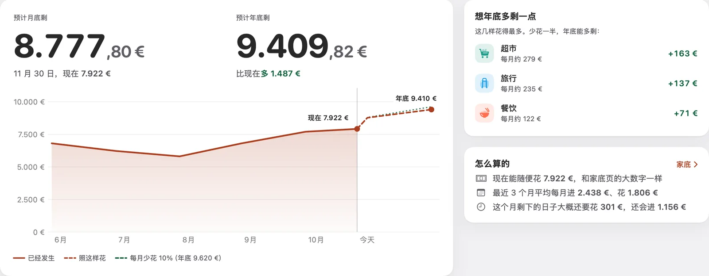
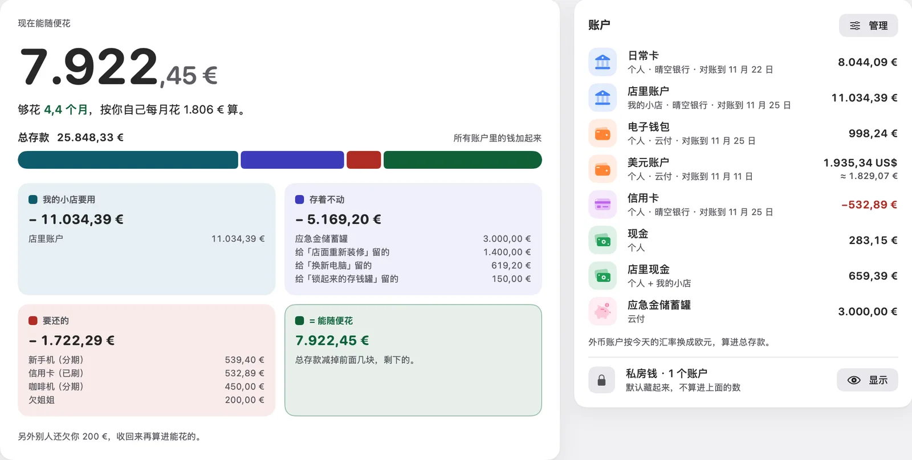

更新日志
每一版改了什么，大白话写在这里。装好的 app 有新版会在左下角提醒，点一下就更新。

最新0.2.6
生意模式、界面全面打磨、记账更稳
开店的人可以把生活和生意分开记；Mac 界面按苹果的标准从头到尾细修了一遍；手机和电脑同时记账不会再互相盖掉。
- 新增生意模式：侧栏顶上切换「生活 | 生意」。生意那边能看这个月真正赚了多少，每天关店后记一下收了多少，房租工资这些固定开销到日子自动记，还能看开店本钱什么时候回本。两边的账户分开，从店里拿钱回家也能记。
- Mac 界面按苹果的设计标准细修了一遍：按钮更好点、颜色跟着生活（橙）或生意（青）走、深色模式更清楚、键盘 Tab 能走到每个按钮、鼠标放上去有反应、窗口拉窄也不挤。
- 流水详情里「改」放在最前面，复制、拆开这些收进 ⋯，删除放最后；分期能直接记这一期还款或提前还清。
- 夏夏换成一个形象，有 7 种样子可以挑；各页上的 AI 提示默认收起来，页面更干净。
还有 2 条改动
- 记账更稳：手机和 Mac 同时改不会再互相覆盖，撤销只撤自己那一步；删除数据前会再确认一次；改目标名字后存进去的钱不会丢。
- iPhone 版也按同样的标准修了一遍，大字号下金额不再被拆开。
更早的版本
0.2.5小金猪存钱罐、手机随手记、一键连上 AI
目标页变成一只小金猪；手机上能随手记一笔、拍小票、管报销；连 AI 只要点一下。
- 目标页重做成小金猪存钱罐：1 个大目标加最多 3 个小目标，夏夏帮你算每天存多少、哪天能到手。存一笔、忍住没买、要用钱取出来，都点小猪。
- 手机上随手记：打开就能记一笔，可以拍小票，还多了一页「报销」，哪些没交、哪些在等钱一眼看清。iPhone 和 Mac 通过 iCloud 自动同步。
- 趋势页改成「照这样花下去」：直接告诉你月底和年底大概还剩多少，哪几样少花一半能多剩多少。
- 连 AI 更省事：每个 AI 一个「连接」按钮，连完自己测一遍能不能读到账本；别的 AI 复制一段话，它会自己配好。
- 更新后会告诉你这一版改了什么，每次打开都会看一眼有没有新版；官网多了更新日志页，还有英文和西班牙语版。
- 界面开始支持英文和西班牙语，在「设置 → 隐私与外观 → 语言」里切换。默认还是中文，夏夏说的话等少数地方还没翻完。

目标页：大目标「换新电脑」的小金猪，下面是三个小目标的小猪（示例数据） 
趋势页：照这样花下去，月底和年底大概还剩多少（示例数据） 
连接你的 AI：每个 AI 一个「连接」按钮，旁边写着连好了没有（示例） 0.2.4家底页改版：一眼看到现在能随便花多少
打开家底，最大的那个数字就是你现在能随便花的钱，还告诉你够花几个月。
- 最大的数字是「现在能随便花」：总存款减掉店里要用的、存着不动的、要还的，剩下的才是你的。
- 下面写着这些钱够花几个月，按你自己每月的花销算；有生意账本时只算个人花销。
- 总存款变成一根彩色粗条，一种颜色一块，下面的小卡写着每块钱是哪些账户、哪些目标。

家底页：最大的数字是现在能随便花的钱，下面一根彩色粗条分出每块钱（示例数据） 0.2.3设置里多了「数据」：看演示、删数据、从备份找回
不想先记账也能看看每一页有数据时的样子；删数据之前会自动备份，删错了能找回来。
- 看看演示数据：用编出来的一年账看每一页，随便点随便改，退出就回到自己的账本。
- 删除数据：可以只删一部分，也可以全删，删之前自动复制一份账本。
- 从备份恢复：从更新前、删除前留下的备份里挑一份恢复。

设置里的「数据」：看演示数据、删除数据（示例数据） 0.2.2花销、趋势、家底三页改版，新增目标、订阅、欠款与分期
看钱的几页都重新排过，一屏看完；还多了三页专门管存钱目标、订阅和欠款。
- 花销页加了和上个月比，饼图和柱状图随手切。
- 新的月份面板：哪个月花多花少一眼看到，点一下就跳过去。
- 「目标」页看存钱来不来得及，「订阅」页找出白花钱的订阅，「欠款与分期」页按我欠的、欠我的排好。
- 拍小票记账，用小票上的日期，不再记成今天。

花销页：这个月和上个月并排对比（示例数据） 0.2.1夏夏有了男生版，还会记住你的习惯
第一次打开可以选女生版或男生版，给助手起名字；夏夏也开始记事了。
- 夏夏和三个伙伴有了男生版，第一次打开时选，设置里随时能换。
- 可以给助手改名字，也能改它怎么称呼你。
- 夏夏的记忆：记得你定的规矩和你的习惯，在「设置 → 夏夏的记忆」里能看能改。
- 换了新的 app 图标：夏夏头像。

0.2.0第一个可以下载的版本
官网可以直接下载，苹果公证过，双击就能打开；以后有新版 app 会自己提醒。
- 官网下载 dmg，拖进「应用程序」就能用。
- 第一次打开带你连上自己的 AI（Claude、Codex 等），记账跟它说一句就行。
- 有新版本时左下角会提醒，点一下就更新；更新前自动备份账本。